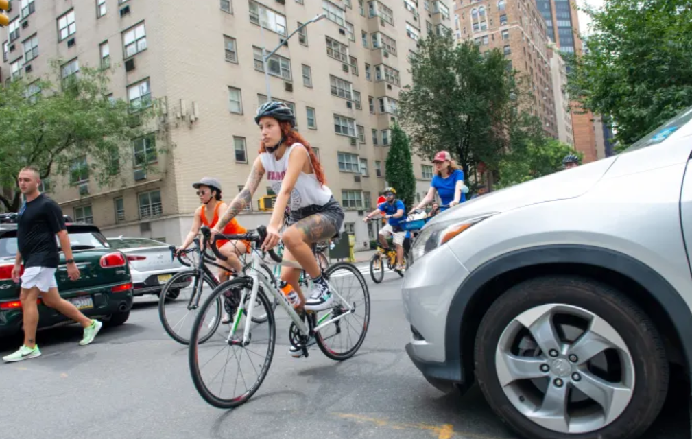

Elijah Nicholson-Messmer . Jan 16, 2025
The kids are tired of driving. A new survey from Deloitte found that nearly half of Americans aged 18 to 34 would be at least somewhat willing to give up owning a vehicle in favor of Mobility-as-a-Service (MaaS)—a jargony umbrella term for everything from public transport and ride/car/bike-sharing to car rentals and taxis.
Deloitte surveyed 1,000 U.S. residents, including 286 people aged 18 to 34. Age appeared to be a driving factor behind the findings, with older cohorts far less interested in giving up vehicle ownership compared to young respondents. For now, a majority of young respondents still want to own a car, but the next generation is on track to change that fact.
A growing generational gap
Across the roughly 1,000 Americans included in Deloitte’s most recent survey, age was the great dividing factor when it came to one’s affinity for car ownership. The survey grouped respondents into three age cohorts: 18 to 34, 35 to 54, and 55+.
Ready to hand over the keys?
Across the 1,000 Americans surveyed in Deloitte's latest study, respondents in the youngest cohort were significantly more willing to give up car ownership in favor of MaaS.
As you might expect, just 11% of respondents in the oldest group said they would be willing to give up vehicle ownership in favor of MaaS. A little over a third of respondents in the middle group, 35%, said they would give up vehicle ownership while nearly half, 44%, of Americans in the youngest group would do the same.
The urban-rural divide
Right now you’re probably thinking “Yeah, someone living in a big city may be willing to give up their car, but what about the rest of the country?” It’s absolutely true that people in rural and suburban areas are less willing to give up their cars than people in urban areas.
Across the 1,000 Americans surveyed (including all ages), 50% of people in urban areas said they were at least somewhat willing to give up vehicle ownership in favor of MaaS. As expected, that figure drops to just 17% when you only ask people in rural and suburban areas.
But here’s the surprising part: that regional divide virtually disappears when it comes to the youngest age group. Young Americans are more open to ditching their car whether they live in a dense city, suburban sprawl, or rural lands. According to Deloitte’s findings, 47% of young respondents living in urban areas would be willing to give up car ownership. But shockingly, that percentage is even higher among young respondents in suburban and rural areas, 53% of whom said they would be at least somewhat willing to give up car ownership.
Final thoughts
Some readers were quick to voice skepticism about the survey’s sample size for its youngest cohort, but Ryan Robinson, automotive research leader at Deloitte, said that his team is comfortable with the statistical significance of the sample size.
The fact that young people are less interested in car ownership may simply be a hard pill to swallow for many enthusiasts. If the current trend continues, the youngest cohort in the survey may be the last generation where most people still prefer car ownership over other forms of transportation. We may not have reached the tipping point yet when it comes to young Americans interested in driving, but it seems we’re not far off.